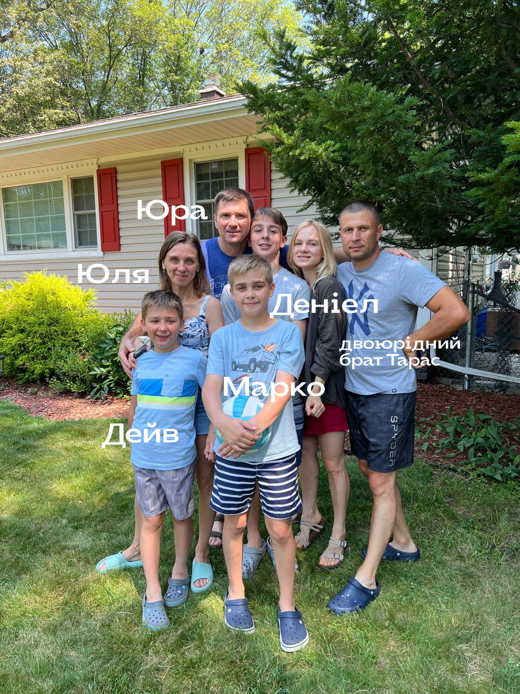

Таня Бура
Таня Бура
Найважчий березень
Особистий лист із проханням молитися за родину після трагічної аварії.
Я планувала березневий лист написати ще кілька тижнів тому, але через завал у служінні все відкладала то діло.
На жаль, тепер його тема повністю змінилась.
Архівний лист. Події й молитовні потреби описані станом на час написання.

Аварія
Цієї суботи сім’я моєї сестри Юлі у США потрапила у дорожню аварію.
Сестра з чоловіком, їх трьома дітьми та двоюрідним братом їхали на відпустку у Флориду. Пізно ввечері їх збив п’яний водій. Всі троє дітей потрапили у реанімацію із різним рівнем ушкоджень.
Діти
Сестра (Юля) з чоловіком (Юра) та кузеном мають різні забої, ніби без переломів. Найбільш постраждали діти.
Наймолодший Девід (9) наразі в реанімації на штучній вентиляції. В нього численні переломи, забої, пошкодження мозку. Але він рухає кінцівками, то є надія, що зв’язок мозку з тілом є.
Найстарший Деніел (15) почувається найкраще, вже ходить. В нього теж є забої, але не критичні.
Марко
Середній, Марко (12 років), позавчора помер.
Я все ще не можу в це повірити. Я була в них майже рік тому, і ми провели чудовий тиждень разом. Марко — неймовірно турботлива дитина. Він завжди допомагав мамі на кухні, сам приготував усім млинці перед дорогою у п’ятницю. Грав у футбол, тренер мав на нього надії. Плавав, брав участь у змаганнях. Був досить сором’язливим, але завжди боровся за справедливість (якщо це не стосувалось розборок з братами :)
Що зараз
Юля та Юра мають надзвичайно важкий час зараз із влаштуванням поховання (вони в госпіталі у Північній Кароліні, а живуть і ховатимуть Маркуся біля Нью-Йорку), з вирішенням питання по аварії і судах, з реабілітацією Дейва, про яку лікарі поки нічого не можуть сказати — стан ліпший, але все ще важкий.
Я думаю про те, щоб поїхати у США за можливості і підтримати їх.
То просто хочу попросити вас про молитву про мою сім’ю. Юля дуже чекала на Марка, то була її мрія — друга дитина. Про те, щоб Бог був поруч, втішав і давав сили.
Стати партнером служіння
Це служіння тримається на команді молитовних і фінансових партнерів. Ваш внесок допомагає нести Євангеліє, практичну турботу й надію студентам, дітям і молоді України.
Підтримати служіння Тані
Через give.cru.org
Сайт служіння
Більше про студентське служіння
Друзі вирішили допомогти фінансово, бо цю ситуацію сім’ї моєї сестри тримати непросто. Посилання на збір — в оригіналі листа. Якщо хочете доєднатись — ласкаво просимо і дякую вам.
Молитовні потреби
- • За Юлю і Юру — поховання Марка, питання по аварії та судах, сили на кожен день.
- • За Дейва (9) — реабілітацію, про яку лікарі поки нічого не можуть сказати.
- • За Деніела (15) — відновлення після аварії.
- • Щоб Бог був поруч, втішав і давав сили.
P.S. — зазвичай якісь апдейти пощу у Facebook групі. А також про служіння можна бачити у нас в інсті та на сайті, ходіть дивитись туди.
Дякую, що можу з вами ділитись складним теж і відчувати вашу підтримку.
— Таня Бура · Березень 2026
Таня Бура
З благословенням у Христі
Студентське служіння · Україна для Христа